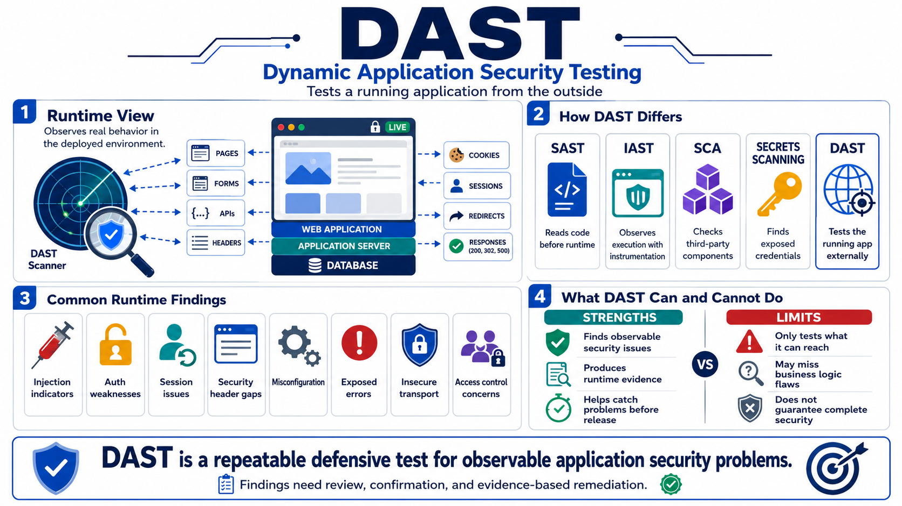

What DAST Means
Connecting to LMS... Progress: in progress

Narration
Dynamic Application Security Testing, or DAST, evaluates a running application from the outside. Instead of reading source code directly, a DAST process interacts with deployed behavior: pages, forms, APIs, headers, cookies, errors, sessions, redirects, and responses. That external perspective is valuable because it shows how the application behaves when requests actually reach the runtime environment, configuration, middleware, authentication layer, and supporting services.
DAST is different from related practices. SAST analyzes source code or artifacts before runtime. IAST observes behavior during execution with instrumentation. SCA focuses on third-party component risk. Secrets scanning searches for exposed credentials. Manual testing and penetration testing add human judgment and broader scenario exploration. DAST complements these practices by producing runtime evidence from the application’s observable surface.
Common DAST finding categories include injection indicators, authentication weaknesses, session handling issues, security header gaps, misconfiguration, exposed errors, insecure transport, and access control concerns. A finding does not automatically prove a full exploit path. It indicates that runtime behavior should be reviewed, understood, reproduced safely, and either remediated, accepted, or dismissed with evidence.
DAST is a defensive testing practice, not a complete security guarantee. A scanner can only evaluate what it reaches, understands, and is authorized to test. It may miss logic flaws, role-specific paths, business rules, or issues hidden behind complex workflows. Used well, DAST gives teams a repeatable way to catch observable security problems before attackers, customers, or auditors encounter them.